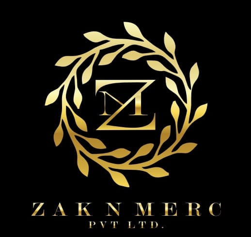

#What makes us different??

"People say our ice creams have an iconic taste and our ice creams are of very high quality."
Zaysh ice cream is an ice cream manufacturing company.
It was founded in 1999 by Mr Abdul Zakir.
Having more than 23 years of manufacturing and selling experience,
We manufacture only premium quality icecreams and maintain a high standard of quality.
Almost all flavours and types of ice creams are produced.
Zaysh Ice Cream is a product of Zak n Merc industries
Mr Abdul Zakir is the founder and director at Zaysh Ice Cream and Zak n Merc industries. He has more than 23 years of manufacturing experience.


In 1998 a man named Abdul Zakir used to work in a bakery. Ice cream used to be his favourite since his childhood. But due to poor financial conditions, his parents could not buy ice creams for him. But in the year 1998, he decided start his own business. But due to his low salary he could not buy machineary to run the business.so he went to the scrap and bought some machinery and started reparing while working part time in the bakery, it took days nights off to repare the machine after a lot of hard work finally machines started working and manufacturing ice candies began in 1999.
He sold those ice candies to the local shopkeepers on a cycle like a door-to-door salesman and earned some money. With that money, he hired some people to do the same task of selling ice candies locally for him and quit the job at the bakery. After earning some more money he started buying machines. So the business model started working and it took 23 years to reach this point.
Our customers say the quality of our products never dropped and our ice cream has an iconic taste.
Zak n Merc industries are a group of industries. Zaysh ice cream is one of the products of Zak n Merc
We manufacture more than 50 different types of ice creams. Our products come with a high standard of quality and hygiene. And we believe in consumer satisfaction.
"People say our ice creams have an iconic taste and our ice creams are of very high quality."
This website was made by Shaikh Zaka Tabish.

"You can get ice creams at any shop in your city.""
"You can buy ice creams in lot from this website.""